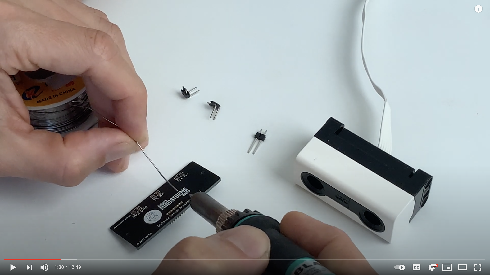

Assembly of the distance sensor breakout board
The 0.05 inch header goes on the backside, that’s the side without rx/tx marking
The angled headers go on rx/tx and gnd/3v3 and face inward. The headers go on the front of the board
You’re free to leave M+ and M- open, or solder any header you want there. These leads will give you 0-8V depending on the pwm setting you make for that port in the LEGO hub.
Here’s a full assembly video: 